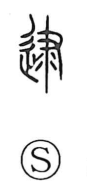

逮

Uncategorized
Kun: | On: tai
to arrest ・ to apprehend ・ to reach ・ to extend ・ to affect
Explanation
A phono-semantic character: the element 隶 supplies the sound tai and depicts a hand grasping the tail of a baleful animal used in cursing rites. By seizing that tail one was believed to make misfortune reach others or to avert it, which gave the character the senses of “to reach, extend to” and “to bring upon, affect,” as in 逮及. In later usage it also came to mean “to seize, arrest,” as in 逮捕.